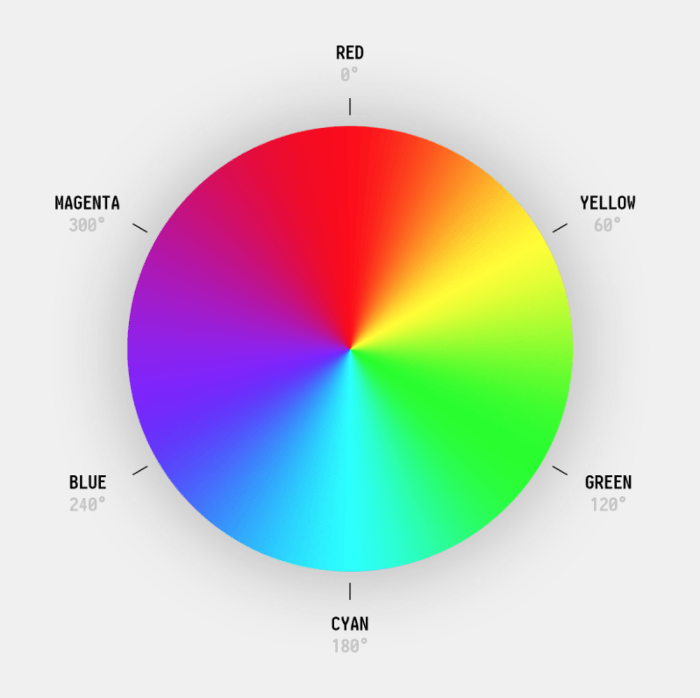
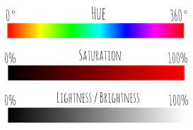

Aula 06
HSL
Podemos usar a função hsl para a escolha da cor, onde:
- H - hue = cor
- S - saturation = saturação (intensidade da cor)
- L - lightness = luminosidade (brilho)
Observações:
- Se colocarmos a saturação em 100%, a cor ficará o mais intensa possível.
- Se colorcamos o brilho em 100%, a cor ficará branca.


Exemplo de cor com hsl()
Exemplo de cor com hsla()